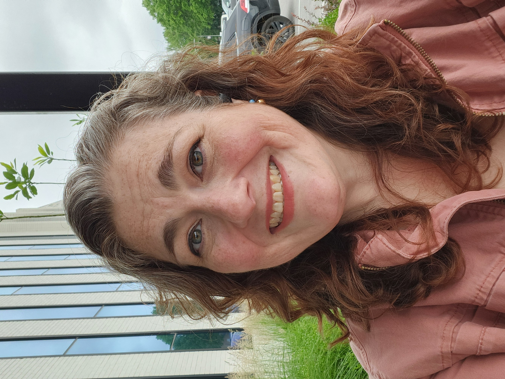

AEC / BIM / VDC
Data & automation
Web & development
AI & systems thinking

About
Technical generalist · Systems thinker · Kansas City
I built REQS.TECH because the gap between "what we need" and "what we have" is almost always a systems problem — and most people don't have someone in their corner who can see both sides of it at once.
My background spans BIM/VDC coordination in AEC, data engineering, web development, workflow automation, and AI enablement. I've worked with construction firms, small businesses, nonprofits, and startups. The thread across all of it: translate complexity into something clear, documented, and actually usable by the people running it.
I'm also neurodivergent — which isn't incidental. It's shaped how I think about systems that need to work with humans, not just for them.
Skills & tools
AEC / BIM / VDC
Data & automation
Web & development
AI & systems thinking
Work history
REQS.TECH
Independent practice offering technical consulting across BIM/VDC, workflow automation, data systems, web, and AI enablement. Clients in AEC, small business, and startup sectors. Focused on clear scoping, documented handoffs, and systems that survive contact with real life.
Construction & AEC
BIM coordination and standards development across project delivery workflows. Autodesk Construction Cloud training, administration, and rollout. Revit model hygiene, data consistency, and repeatable delivery processes. Cross-disciplinary coordination between design, engineering, and field teams.
Various clients
Landing pages, data-driven web apps, Shopify builds, Firebase-backed tools. Built and maintained sites for clients in entertainment, cannabis, and small business sectors. Work spans front-end HTML/CSS/JS, Python scripting, TypeScript, and third-party integrations.
Small businesses & startups
Workflow audits, tool consolidation, and automation builds using Make, Zapier, Google Workspace, and Microsoft 365. Specializing in organizations that have outgrown manual processes and need systems that run without daily intervention.
How I work
My working style is shaped as much by who I am as by what I know. I'm direct, thorough, and I don't hand off something I wouldn't trust myself. I build for clarity and longevity — documentation is part of the deliverable, not an afterthought.
Start with a 90-minute Discovery Call. You'll leave with a written roadmap — whether we work together or not.
Get in touch →